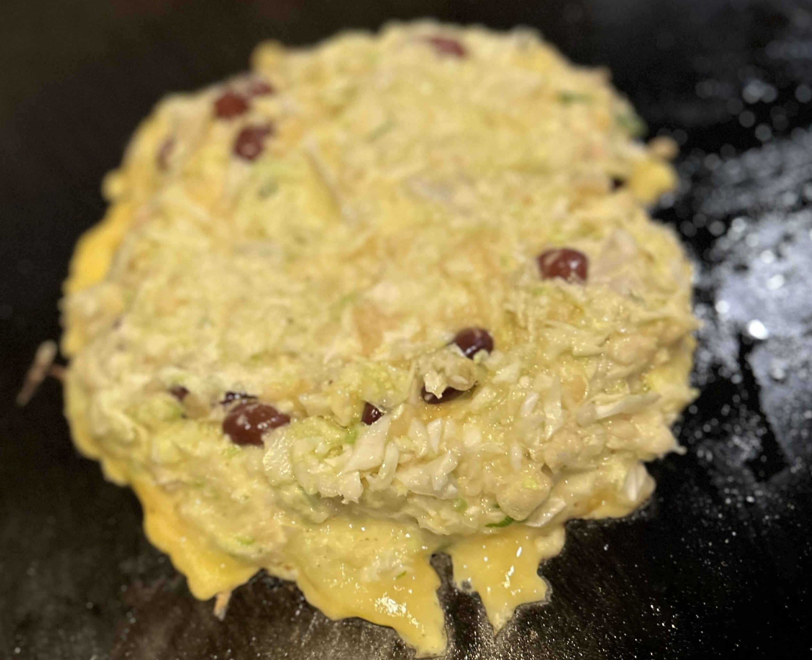
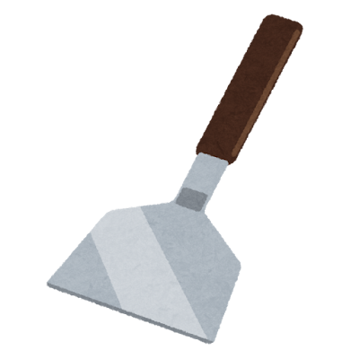
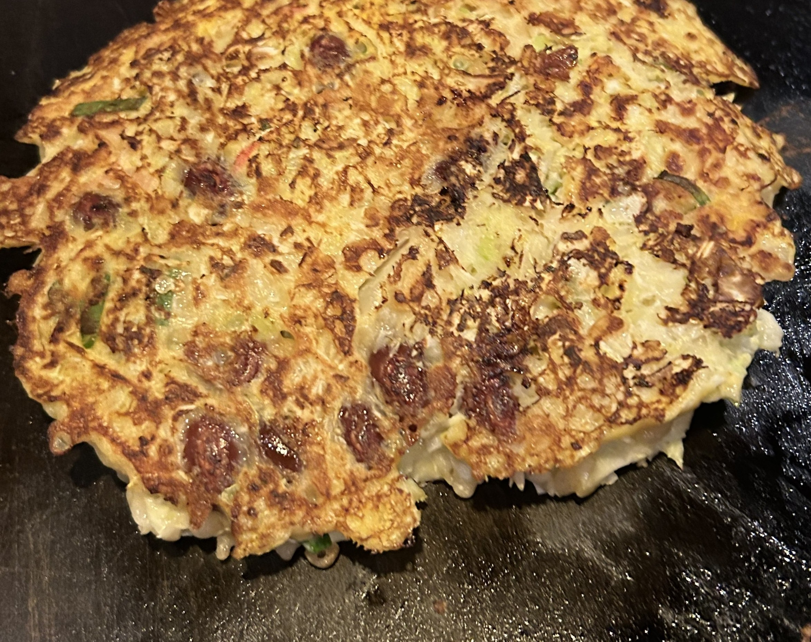
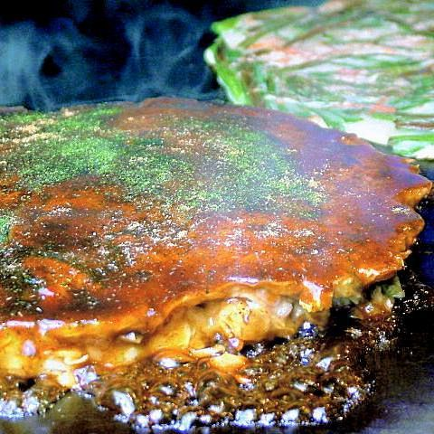

Let's cook OKONOMIYAKI
1.Put some ingredients that need to be well cooked to on iron plate first.
(Such as pork,big shrimp,mochi,scallops,tempura,soba)
2.Grease the iron plate.
3.Mix the batter and ingredients.
4.Pour everything on iron.
↓ okonomiyaki on iron

5.Wait until okonomiyaki is fully cooked.
6.Flip it by TEKO.
↓ is TEKO.

↓ Best baked

7.Wait until back is fully cooked.
8.If both front and back are cooked,
Spread sauce on the okonomiyaki.
↓ COMPLETE

8.Drizzle mayonnaise on the okonomiyaki.
9.Sprinkle aonori (green seaweed) on top of the okonomiyaki.
10.Enjoy eating!!!!